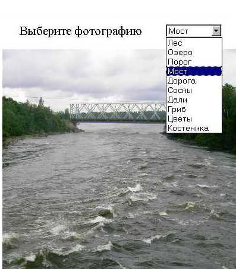
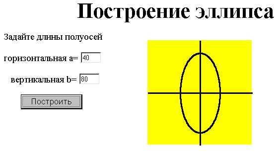

JavaScript Изображения и рисование
Цель работы: исследовать методы динамического размещения изображений на странице и научиться создавать рисунки с помощь сценария.
Предварительная загрузка изображений
Изображения, размещаемые на сайтах, должны удовлетворять двум противоречащим друг другу требованиям. Они должны иметь высокое качество и быстро загружаться, но чем выше качество изображения, тем больше занимаемый изображением объём памяти и тем медленнее оно загружается. Задача построения изображения, имеющего приемлемые объём и качество, решается с помощь графических пакетов прикладных программ, например, Photoshop с подключённым к нему пакетом ImageReady.
Средствами JavaScript можно сначала загрузить несколько изображений в кэш, а затем выводить их по одному на экран по команде пользователя. Такой приём основан на психологии пользователя Интернета. Опытным путём доказано, что человек не замечает паузы между моментами посылки запроса и получением ответа, если эта пауза не больше четырёх секунд. Пользователь привык ждать несколько десятков секунд, пока загрузится выбранная им страница, а при работе с уже загруженной страницей болезненно реагирует на возникающие паузы.
Для загрузки изображения в память без отображения его на экране служит объект Image, которому не соответствует ни один элемент HTML-документа. Создаётся и используется объект Image так:
var risunok = new Image(ширина, высота) //создание объекта risunok.src = "pict.jpg" //загрузка pict.jpg в память document.images[0].src = risunok.src //отображение на экране
Задача 4.1. Создайте страницу (рис. 2), на которой пользователь может просматривать фотографии, выбирая их названия из поля со списком (тег <SELECT>).

Рис. 2
Указания. Используйте ассоциативный массив, элементами которого будут объекты Image, то есть фотографии, а ключами – значения атрибута VALUE тега <SELECT>. Создание массива и одного элемента делается так:
var photo= new Array() photo["les"] = new Image(400,550);//элемент массива - объект photo["les"].src = "les.jpg";//свойство объекта - имя файла с рисунком
Вызов функции, служащей для появления в окне браузера выбранной фотография, производится при щелчке мышкой по элементу списка.Это событие называется onchange. В качестве параметра функции передаётся объект SELECT:
<SELECT onchange= "prosm(this)"> <option value="les">Лес
Функция, правильно воспринимаемая браузерами Internet Explorer и Mozilla, состоит из трёх строк:
function prosm(list)
{d = list.options[list.selectedIndex].value //d ="les"
document.fot.src = photo[d].src; //fot – имя тега IMG }
Файлы с фотографиями предоставит преподаватель.
Рисование
В JavaScript изображение можно построить тремя способами:
- по принципу мозаики, используя в качестве элемента маленькую картинку или окрашенный элемент <div> (минимальный размер элемента мозаики - один пиксель);
- средствами языка SVG (от англ. Scalable Vector Graphics — масштабируемая векторная графика);
- с помощью элемента canvas языка HTML5.
Кроме того, отрезок вертикальной прямой можно изобразить с помощью тега <DIV>, задав ширину и высоту контейнера равными толщине и длине линии соответственно. Горизонтальный отрезок строится с помощью тега <DIV> и вложенного в него тега <HR>.
Идея рисования первым способом кривой, описанной аналитически, состоит в следующем:
- создаётся картинка размером 1 пиксель, залитая чёрным или каким-то другим цветом,
- эта картинка размножается по заданной траектории.
Вместо картинки можно использовать элемент <DIV>.
В примере 4.1 описанными методами строятся четыре прямых.
Пример 4.1
<HTML>
<HEAD>
<TITLE>Прямые линии</TITLE>
<script>
line(100,100,400,400,3)
line(100,400,400,100,10)
function line(x1,y1,x2,y2,n)
{ var xstr=""
var xstr0=
'<IMG SRC="Tochka.bmp" WIDTH='+n+' HEIGHT='+n+
' STYLE="position:absolute;'
var k=(y2-y1)/(x2-x1)
x=x1
while (x<=x2)
{ xstr+=xstr0+'top:'+(k*(x-x1)+y1)+';left:'+x+'">';
x++
}
document.write(xstr)
}
</script>
</HEAD>
<BODY>
</div>
<div style="font-size:20pt;padding-left:50">
<B>Рисование прямых линий</b></div>
<DIV id="dd" STYLE="position:absolute;top:250;left:100;
width:300;height:1;"><hr noshade></div>
<div ID="kv" STYLE="position:absolute;top:100;left:250;
width:1;HEIGHT:300;background-color:#ff0099"></div>
</BODY></HTML>
Все прямые пересекаются в одной точке (рис. 3). Горизонтальная и вертикальная прямые построены без использования скрипта. Наклонных прямые построены с помощью функции line(x1,y1,x2,y2,n), где x1, y1 – координаты начала отрезка прямой, x2, y2 – координаты конца, n – толщина линии.

Рис. 3
Задача 4.2. Создайте страницу (рис. 4) , на которой строится эллипс с задаваемыми пользователем размерами большой и малой полуосей. Эллипс нужно построить всеми тремя указанными выше способами.
Указания. Для построения эллипса первым способом удобно использовать его параметрические уравнения:
x = a* cos(t); y = b*sin(t),
где: a, b – полуоси, 0 <= t <= 2π

Рис. 4